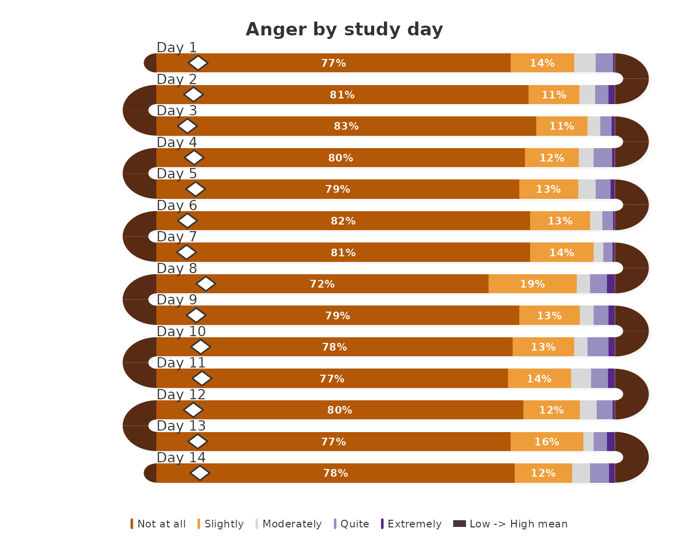
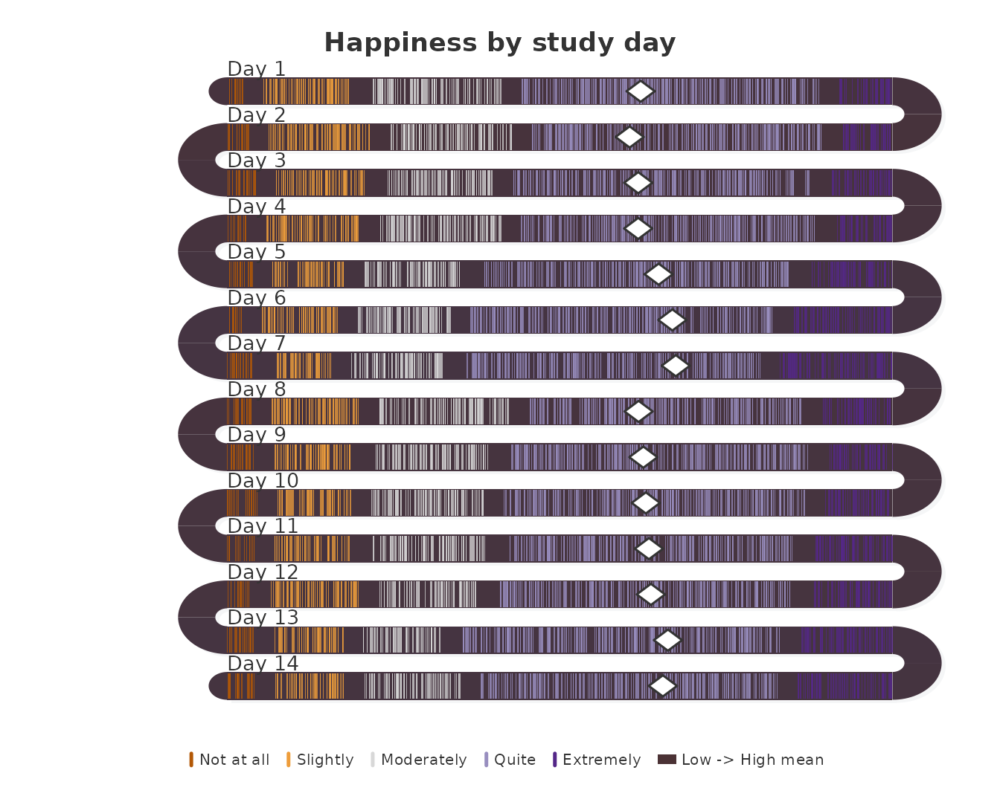
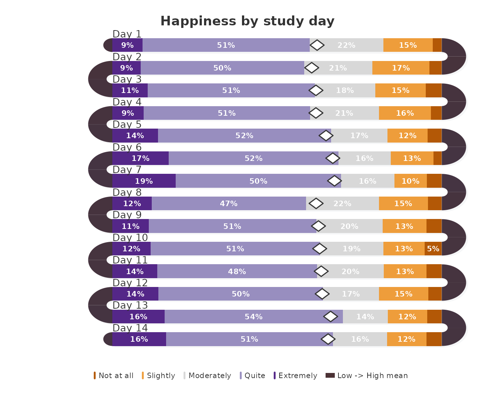
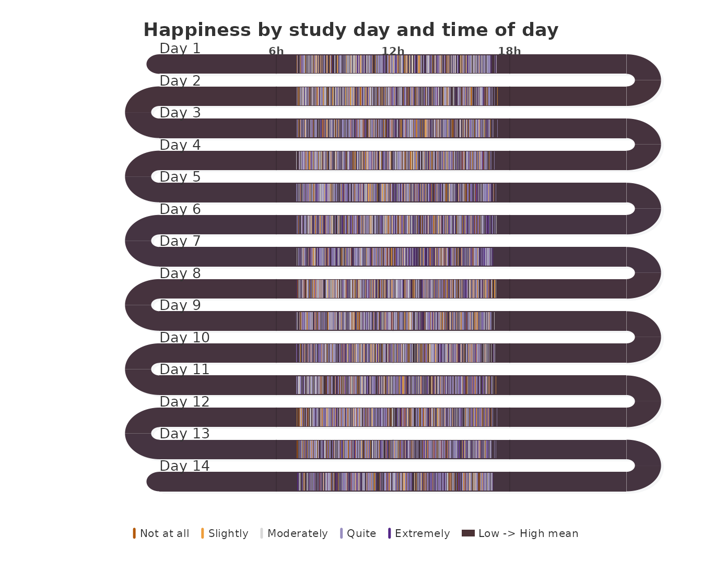

Case study: daily emotions over fourteen days
Written by Mohammed Saqr and Sonsoles López-Pernas
Source:vignettes/articles/case-daily-emotions.Rmd
case-daily-emotions.RmdExperience sampling studies ask participants to report their current state several times a day over days or weeks. The resulting data answer questions that a single questionnaire cannot: whether emotions change over the course of a study, whether some days differ from others, and whether the time of day matters. They also raise a presentation problem. Averaging each day to one number hides how the responses are distributed, and a separate histogram for each day spreads the comparison over many panels. A snake plot of the daily distributions keeps one band per day in study order, so the distribution of every day and its change from one day to the next are read in one figure.
This case study analyses the anger and happiness ratings of a cohort
of university students over 14 study days. It first establishes the
structure of the study (which days, how many answers), then asks whether
the share of high-anger answers changes over the study, whether
happiness differs between weekdays and weekends, and when in the day the
answers are given. Each question is answered first with numbers computed
from the data and then with survey_snake() in its
experience sampling mode (var, day,
timestamp).
Data
ema_beeps holds every answered prompt (“beep”) of the
experience sampling study of Neubauer and Schmiedek (2024; data CC-BY
4.0 at https://osf.io/bhq3p). Each row is one beep.
-
Participant:
id— anonymised identifier; beeps are nested within participants. -
Study day:
day— 1 to 14; one band per day in the plots. -
Time stamp:
start_time— date and clock time of the beep. -
Happiness:
happy— 1 (not at all) to 5 (extremely), rescaled from the original 1–7. -
Anger:
angry— 1 (not at all) to 5 (extremely), rescaled from the original 1–7.
with(ema_beeps, c(beeps = length(id), participants = length(unique(id))))
#> beeps participants
#> 11474 321
scale_labels <- c("1" = "Not at all", "2" = "Slightly", "3" = "Moderately",
"4" = "Quite", "5" = "Extremely")The data hold 11,474 beeps from 321 participants.
scale_labels maps the five levels to the labels shown in
the legends.
The structure of the study
Before comparing days, it is necessary to know what a study day is. The first question is on which weekday each study day falls.
with(ema_beeps, table(day, weekday = format(start_time, "%a")))
#> weekday
#> day Fri Mon Sat Sun Thu Tue Wed
#> 1 0 1161 0 0 0 0 0
#> 2 0 0 0 0 0 1110 0
#> 3 0 0 0 0 0 0 1050
#> 4 0 0 0 0 985 0 0
#> 5 924 0 0 0 0 0 0
#> 6 0 0 779 0 0 0 0
#> 7 0 0 0 756 0 0 0
#> 8 0 853 0 0 0 0 0
#> 9 0 0 0 0 0 729 0
#> 10 0 0 0 0 0 0 735
#> 11 0 0 0 0 689 0 0
#> 12 630 0 0 0 0 0 0
#> 13 0 0 537 0 0 0 0
#> 14 0 0 0 536 0 0 0Every study day falls on one weekday for all participants: days 1 to 7 run from Monday to Sunday, and days 8 to 14 again from Monday to Sunday. The next question is whether days 7 and 8 are consecutive. For each participant who answered on both days, the number of calendar days between them is computed.
burst_gap <- aggregate(cbind(gap = as.numeric(as.Date(start_time))) ~ id,
data = subset(ema_beeps, day %in% c(7, 8)),
FUN = \(x) diff(range(x)))
with(subset(burst_gap, gap > 0), table(days_between_day7_and_day8 = gap))
#> days_between_day7_and_day8
#> 43
#> 209For all 209 participants who answered on both days, day 8 comes 43 days after day 7. The study therefore consists of two measurement weeks, each running from Monday to Sunday, six weeks apart. Day 8 is the first day of the second week, not the day after day 7, and any change between days 7 and 8 may reflect the six weeks in between.
The third question is how many participants and beeps contribute to each day.
merge(aggregate(id ~ day, data = ema_beeps, FUN = \(x) length(unique(x))),
aggregate(cbind(beeps = happy) ~ day, data = ema_beeps, FUN = length))
#> day id beeps
#> 1 1 304 1161
#> 2 2 290 1110
#> 3 3 280 1050
#> 4 4 270 985
#> 5 5 259 924
#> 6 6 241 779
#> 7 7 234 756
#> 8 8 240 853
#> 9 9 214 729
#> 10 10 218 735
#> 11 11 212 689
#> 12 12 195 630
#> 13 13 178 537
#> 14 14 175 536The number of participants falls from 304 on day 1 to 175 on day 14, and the number of beeps from 1,161 to 536. Within each week, participation declines from Monday to Sunday (304 to 234 participants in the first week, 240 to 175 in the second). Every daily distribution below is therefore based on a different, shrinking set of participants, and a change in the distribution can come from a change in emotions or from a change in who answers.
Does the share of high-anger beeps change?
Anger is rare in these data, so the question is about the upper part of the scale: does the share of beeps with anger rated moderately or higher change over the study? The full distribution of anger per day, in percent of that day’s beeps:
round(100 * prop.table(xtabs(~ day + angry, data = ema_beeps), margin = 1), 1)
#> angry
#> day 1 2 3 4 5
#> 1 77.3 13.9 4.7 3.8 0.4
#> 2 81.2 11.1 3.4 3.0 1.4
#> 3 82.9 11.1 2.9 2.5 0.7
#> 4 80.4 11.7 3.2 4.1 0.6
#> 5 79.1 12.9 3.8 3.2 1.0
#> 6 81.5 13.1 2.7 2.3 0.4
#> 7 81.5 13.9 2.1 2.0 0.5
#> 8 72.5 19.2 2.9 3.6 1.8
#> 9 79.1 13.2 3.0 3.3 1.4
#> 10 77.7 13.5 2.9 4.6 1.4
#> 11 76.6 13.8 4.4 3.8 1.5
#> 12 80.0 12.4 3.7 3.5 0.5
#> 13 77.3 15.8 2.2 3.0 1.7
#> 14 78.2 12.5 3.9 4.1 1.3On every day, between 72.5% and 82.9% of the beeps report no anger at all. The share of beeps at levels 3 to 5 is the sum of the last three columns; it is computed per day and per week below.
anger <- transform(ema_beeps,
high_anger = angry >= 3,
week = ifelse(day <= 7, "first", "second"))
aggregate(high_anger ~ day, data = anger, FUN = mean)
#> day high_anger
#> 1 1 0.0887
#> 2 2 0.0775
#> 3 3 0.0600
#> 4 4 0.0792
#> 5 5 0.0801
#> 6 6 0.0539
#> 7 7 0.0463
#> 8 8 0.0832
#> 9 9 0.0768
#> 10 10 0.0884
#> 11 11 0.0958
#> 12 12 0.0762
#> 13 13 0.0689
#> 14 14 0.0933
aggregate(high_anger ~ week, data = anger, FUN = mean)
#> week high_anger
#> 1 first 0.0711
#> 2 second 0.0835The share of high-anger beeps lies between 4.6% (day 7) and 8.9% (day 1) in the first week and between 6.9% (day 13) and 9.6% (day 11) in the second. Over the whole week it rises from 7.1% to 8.3%, a difference of 1.2 percentage points. The largest single change is from day 7 to day 8, where the share of beeps with no anger falls from 81.5% to 72.5% and the share at level 2 rises from 13.9% to 19.2%.
Because each participant contributes several beeps, days on which a few participants answer often weigh those participants heavily. Averaging within participants first, and then across participants, gives every participant the same weight:
person_day <- aggregate(angry ~ id + day, data = ema_beeps, FUN = mean)
merge(aggregate(cbind(beep_mean = angry) ~ day, data = ema_beeps, FUN = mean),
aggregate(cbind(person_mean = angry) ~ day, data = person_day, FUN = mean))
#> day beep_mean person_mean
#> 1 1 1.36 1.40
#> 2 2 1.32 1.36
#> 3 3 1.27 1.28
#> 4 4 1.33 1.32
#> 5 5 1.34 1.34
#> 6 6 1.27 1.28
#> 7 7 1.26 1.30
#> 8 8 1.43 1.43
#> 9 9 1.35 1.35
#> 10 10 1.39 1.42
#> 11 11 1.40 1.42
#> 12 12 1.32 1.33
#> 13 13 1.36 1.35
#> 14 14 1.38 1.42The two means differ by at most 0.04 on any day (1.36 against 1.40 on day 1), and both are highest on day 8 (1.43). The rise at the start of the second week is therefore not an artefact of a few participants answering many beeps. The analysis is descriptive; it does not test whether the day-to-day differences exceed what the sampling of participants would produce.
The stacked bars draw the percentage table above, one band per day:
survey_snake(ema_beeps, var = "angry", day = "day", tick_shape = "bar",
colors = snake_palette("sunset", n = 5),
level_labels = scale_labels, title = "Anger by study day")
Each band is one study day, divided into segments whose widths are the percentages of the day’s beeps at each level, from not at all on the left; the percentage is written in each segment wide enough to hold it. The diamond marks the day’s mean rating and the band is shaded by that mean. The comparison of interest, the share in the three right-hand segments, is small on every day, which matches the 4.6% to 9.6% computed above; the widest change between neighbouring bands is the drop of the left-hand segment from day 7 to day 8.
Are the weekends happier?
Happiness is common rather than rare: most beeps are rated quite happy. The question is whether the share of the highest rating differs between weekdays and weekends, which the weekday table above locates on days 6, 7, 13 and 14.
round(100 * prop.table(xtabs(~ day + happy, data = ema_beeps), margin = 1), 1)
#> happy
#> day 1 2 3 4 5
#> 1 2.8 15.0 22.3 50.8 9.1
#> 2 3.7 17.4 20.7 49.6 8.6
#> 3 4.9 15.3 18.3 50.9 10.7
#> 4 3.2 15.8 20.9 50.6 9.4
#> 5 4.3 12.1 17.2 52.5 13.9
#> 6 2.6 13.0 15.8 51.6 17.1
#> 7 4.5 9.9 16.1 50.3 19.2
#> 8 4.2 14.9 22.2 46.8 12.0
#> 9 4.7 13.3 20.2 50.9 11.0
#> 10 5.2 12.5 19.3 51.4 11.6
#> 11 4.6 12.9 20.3 48.5 13.6
#> 12 4.1 14.9 17.0 50.0 14.0
#> 13 4.5 11.9 13.6 54.2 15.8
#> 14 4.7 11.9 16.4 50.7 16.2
aggregate(happy ~ weekend,
data = transform(ema_beeps, weekend = day %in% c(6, 7, 13, 14)),
FUN = mean)
#> weekend happy
#> 1 FALSE 3.50
#> 2 TRUE 3.67The share of beeps rated extremely happy rises within each week: from 9.1% on Monday (day 1) to 19.2% on Sunday (day 7) in the first week, and from 12.0% (day 8) to 16.2% (day 14) in the second. The mean happiness is 3.67 on weekend days and 3.50 on weekdays. The share at level 4 is close to half on every day (46.8% to 54.2%), so the weekly change takes place in the upper tail.
The tick version of the plot draws every beep rather than every
percentage. Each tick is one beep; the ticks of each level occupy a zone
whose width is that level’s share of the day’s beeps.
bar_reverse is not needed here because the zones run from
level 1 on the left to level 5 on the right.
survey_snake(ema_beeps, var = "happy", day = "day",
colors = snake_palette("sunset", n = 5),
level_labels = scale_labels, title = "Happiness by study day")
The bars show the same comparison as exact percentages. With
bar_reverse = TRUE the segments start from
extremely on the left, so the segment that changes within each
week, the share of extremely, starts at the same position in
every band and its widths can be compared directly.
survey_snake(ema_beeps, var = "happy", day = "day", tick_shape = "bar",
bar_reverse = TRUE, colors = snake_palette("sunset", n = 5),
level_labels = scale_labels, title = "Happiness by study day")
Ticks keep the number of beeps visible (day 1 has 1,161 ticks, day 14 has 536), while bars give the shares a reader can compare against the table. For the question asked here, a change in one segment, the bars with the segment aligned at the left edge are the more precise display.
When in the day are beeps answered?
The last question concerns the clock rather than the calendar. The number of beeps per hour of the day, and the mean ratings in each hour:
timing <- transform(ema_beeps, hour = format(start_time, "%H"))
with(timing, table(hour))
#> hour
#> 07 08 09 10 11 12 13 14 15 16 17
#> 979 1184 1089 1291 1112 1241 1048 1232 990 1197 111
aggregate(cbind(happy, angry) ~ hour, data = timing, FUN = mean)
#> hour happy angry
#> 1 07 3.45 1.30
#> 2 08 3.51 1.32
#> 3 09 3.55 1.32
#> 4 10 3.51 1.37
#> 5 11 3.49 1.35
#> 6 12 3.57 1.32
#> 7 13 3.52 1.38
#> 8 14 3.57 1.34
#> 9 15 3.53 1.36
#> 10 16 3.61 1.34
#> 11 17 3.63 1.31All beeps are answered between 07:00 and 17:59, with between 979 and 1,291 beeps in each hour from 7 to 16 and 111 in the hour from 17:00. Mean happiness rises from 3.45 in the hour from 7:00 to 3.61 in the hour from 16:00 (3.63 from 17:00, based on 111 beeps); mean anger stays between 1.30 and 1.38 in every hour. Happiness is higher later in the day; anger does not follow the clock.
With timestamp, survey_snake() places each
tick at its clock time instead of in a level zone, and colours it by the
response level. The band then spans the full 24 hours, with guides at
6h, 12h and 18h. The mean marker is switched off because its horizontal
position encodes the mean rating, which has no meaning on a time
axis.
survey_snake(ema_beeps, var = "happy", day = "day", timestamp = "start_time",
show_mean = FALSE, colors = snake_palette("sunset", n = 5),
level_labels = scale_labels,
title = "Happiness by study day and time of day")
Each tick is one beep, at the time it was answered and in the colour of its happiness rating. All ticks fall between the 6h and 18h guides, which is the 07:00 to 17:59 window computed above; the beeps of every day are spread over that window rather than concentrated at a few times.
Conclusions
- The 14 study days are two Monday-to-Sunday weeks, six weeks (43 days) apart. Day-to-day comparisons across day 7 and day 8 span that gap.
- Participation falls from 304 participants on day 1 to 175 on day 14, and falls within each week.
- Anger is absent in 72.5% to 82.9% of the beeps on every day. The share of beeps at moderately angry or above rises from 7.1% in the first week to 8.3% in the second, and mean anger is highest on day 8, the first day of the second week, whether beeps or participants are weighted equally.
- The share of extremely happy beeps rises from Monday to Sunday in both weeks; mean happiness is 3.67 on weekend days and 3.50 on weekdays.
- Happiness rises slightly over the day (3.45 at 7:00 to 3.61 at 16:00); anger does not change with the time of day.
- Stacked bars (
tick_shape = "bar") give the exact daily shares; ticks keep the number of beeps visible;timestamppositions every beep on the clock.
The same data can also be drawn as a sequence or as clock-time activity; see the sequences guide and the activity guide.
Reference
Neubauer, A. B., & Schmiedek, F. (2024). Approaching academic adjustment on multiple time scales. Zeitschrift für Erziehungswissenschaft, 27(1), 147–168. https://doi.org/10.1007/s11618-023-01182-8